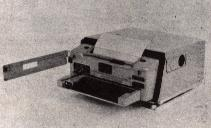
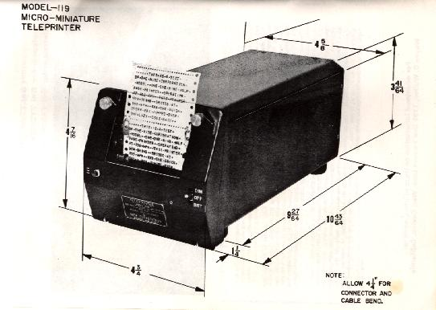
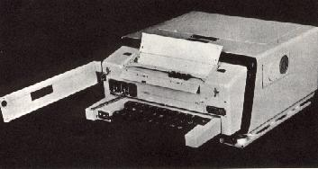

Tactical Teletypewriter SetA tactical teletypewriter set from every standpoint MITE
designed AN/TGC-14A(V) is the first miniaturized mobile
send-receive teletypewriter designed specifically for military
employment. This rugged and versatile light-weight unit can be set up to operate within one minute after connection to a primary power source - on the ground, in aircraft and in armored and other vehicles. It will transmit and print page copy of messages received at 100 words per minute, under the most adverse environmental and tactical conditions. The militarized MITE maintains reliable radio relay or wire circuit message sending and receiving in temperatures from -55C. to +55C. while withstanding severe shock and vibration as well as dust or salt spray atmosphere.  The MITE AN/TGC-14A (V) is a modular constructed assembly consisting of a receiving and printing unit, a keyboard transmitter, a connecting electrical chassis, an immersion-proof or one of several special purpose carrying cases, shock mounts and connecting cables specifically designed and fully qualified to MIL-E-16400 and MIL-T-23330 (MC). The MITE TT-264/AG, TT-299A/UG and TT-3951UG teletypewriters are lightweight, miniaturized, transmitting and receiving, page printing, telegraph sets, specifically designed for use in air to air or ground to ground; shipboard and submarine; and general communication use respectively. Modular in construction for easy access and inspection, the equipment weighs approximately 36 pounds, including transmitting keyboard, receiving page-printer, connecting chassis with internal line battery supply, and airborne-type case, complete with shock mounting. The compact teletypewriter maintain highly reliable radio relay or wire circuit message sending and receiving capability, even under severe tactical and environmental conditions. They operate into or out of a converter for use over half-duplex (simplex) or full duplex radio communication links between calling stations.  An important design feature of the equipment is its self-contained electrical system which requires only connection to a primary power source and transmission media to place the equipment in operation. All the units use solid state electronic line sensing in lieu of conventional electro-mechanical relays, improving the operating characteristics and enhancing life reliability. Designed and fully qualified to specifications MIL-E-5400 and MIL-E-16400, the units provide optimum performance under severe climatic, high altitude, and environmental conditions. With self contained heaters, the teletypewriters require less than 40 minutes for warm-up at ambient temperatures of -54C. The TT-298A/UG is a receive only version of the TT-299A/U13 and the TT-394/UG is a receive only version of the TT-395/TJG. Otherwise the characteristics of the receive only units are identical to the send-receive units and can be converted to the latter merely by insertion of the keyboard, which can be accomplished without the use of tools.  Teletypewriter Set TT264/AG Teletypewriter Set TT299A/UG Teletypewriter SEt TT395/UG
|

Copyright George Hutchison, W7TTY & Bill Bytheway, K7TTY -- November 2011